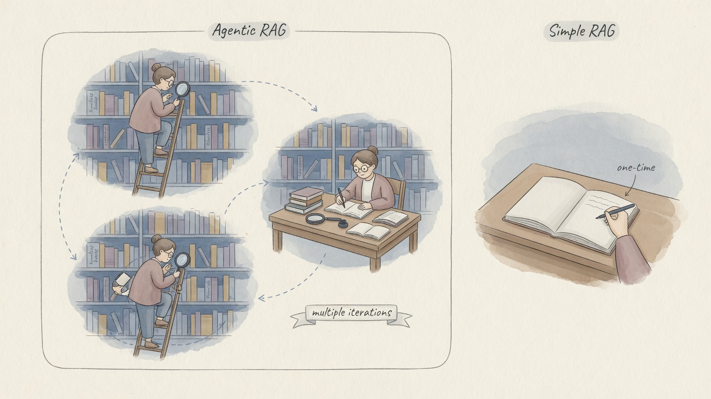

架构选型
建议先完成 ①–③。本页回答：同事嘴里的 LangGraph / CrewAI / Dify 对应哪种「组织方式」？ 你的场景更适合固定流程、单智能体，还是多角色协作？
小白先记住
框架名不重要，先选范式：只问答 → RAG；步骤固定 → Workflow；路径开放要代办 → Agent； 多工种互检 → Multi-Agent。框架只是实现工具。零代码可从 Dify/Coze 试；要深度控制再学 LangGraph 等。
框架家族一眼图
有的画流程图，有的组剧组，有的开圆桌，有的主攻资料库，有的低代码搭积木。

六种常见架构范式
纯 LLM 对话
单轮/多轮聊天，靠提示与模型知识。简单便宜，难执行真实动作，知识易过时。
经典 RAG
检索 → 生成。适合知识问答。路径固定，复杂多源调研时偏「呆」。
Tool / Skill Agent
单智能体 + 工具/技能循环。能办事，需停止条件与权限。多数业务 Agent 从这里起步。
固定 Workflow
预设步骤网络：分支、人审、重试。可控可审计，适合合规与稳定业务。
Agentic / Multi-Agent RAG
检索纳入规划：多跳查询、路由数据源、互检。像研究团队而非一次搜索。
多 Agent 协作
角色分工 + 主管调度或群聊。适合复杂项目，成本与协调复杂度上升。

在架构里它们挂在哪

搭系统时先问
哪些能力要复用多次？→ 抽成 Skill。哪些步骤顺序稳定？→ 画成 Workflow。哪里路径不定？→ 嵌 Agent Loop。
反模式
把所有逻辑塞进一个超级提示词；或每个小任务都上多 Agent（贵且难控）。
海外代表性框架
把 Agent/流程建成带状态的图：循环、分支、持久执行、人在回路。适合复杂长跑、要可控可调试的工作流。
模型接口、提示、检索、工具等积木。拼 RAG 与简单 Agent 很快；复杂控制常升级到 LangGraph。
用 Crew + 角色 + 任务描述多 Agent。适合快速搭协作原型，心智贴近真实组织分工。
多个 Agent 通过对话消息推进任务（可含人类）。适合协商、代码共创、多视角讨论。
强项是把文档、数据库接进 LLM：索引、检索、查询路由、Workflow。企业知识库与 RAG Agent 常见。
微软技能/插件式集成；OpenAI / Anthropic 官方 Agents SDK 与自家模型磨合紧。适合深度绑定某一栈的团队。
国内与产品化平台
可视化编排、RAG、Agent、模型接入一站式。适合团队快速做应用，少从零写编排代码。
插件、工作流、发布渠道。适合运营与产品快速试验对话智能体与技能挂载。
强调易用、分布式与中文文档。选型看社区活跃度与部署约束。
架构的发动机可选国内外 API 或开源权重。框架可换，模型可换——先建编排与评测，再比模型更稳。
一张表快速对照
| 名称 | 核心隐喻 | 更擅长 | 相对代价 |
|---|---|---|---|
| 经典 RAG | 开卷考试 | 知识问答、文档助手 | 实现简单；复杂任务弱 |
| Agentic RAG | 多轮调研 | 多跳问题、多源检索 | 更准也可能更贵更慢 |
| 固定 Workflow | SOP 流水线 | 稳定业务、合规审计 | 开放问题不够灵活 |
| LangGraph | 流程图 / 状态机 | 可控长流程、生产编排 | 学习曲线较高 |
| CrewAI | 角色团队 | 多角色协作原型 | 复杂控制需额外设计 |
| AutoGen | 圆桌对话 | 协商式、研究型协作 | 对话路径可能发散 |
| LlamaIndex | 数据管家 | 索引与知识型 Agent | 非知识场景不是重点 |
| Dify / Coze | 低代码工作室 | 快速产品化、挂 Skill | 深度定制受平台边界限制 |
选型决策树
通识结论：架构不是宗教。先用 通识 9 问 定义需求，再选框架；用 Eval 与真实任务验收，而不是用 Star 数验收。